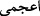
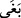
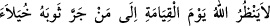
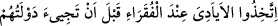

şanslı! dediler.
80. Kendilerine ilim verilmiş olanlar ise şöyle dediler: Yazıklar olsun size! Îman
edip iyi işler yapanlara göre Allâh’ın mükâfatı daha üstündür. Ona da ancak
sabredenler kavuşabilir.
81. Nihâyet biz, onu da, sarayını da yerin dibine geçirdik. Artık Allâh’a karşı
kendisine yardım edecek âvânesi olmadığı gibi, o, kendini savunup kurtarabilecek
kimselerden de değildi.
82. Daha dün onun yerinde olmayı isteyenler: Demek ki, Allah rızkı, kullarından
dilediğine bol veriyor, dilediğine de az. Şâyet Allah bize lütufta bulunmuş
olmasaydı, bizi de yerin dibine geçirirdi. Vay! Demek ki inkârcılar iflâh olmazmış!
demeye başladılar.
“Kârûn, Mûsâ’nın kavminden idi de, onlara karşı azgınlık etmişti.”
“Mûsâ” ismi, Hârûn ismi gibi Arapça olmayan (__WORD__) bir isimdir ve bu nedenle gayr-
i munsariftir. Mûsâ (a.s.)’ın amcası, Yasher b. Kâheş b. Lâvey b. Ya’kûb’un oğludur.
Mûsâ (a.s.)’ın nesebi ise Mûsâ b. İmran b. Köheş’tir.
Kârûn, Mûsâ (a.s.)’a îman etmişti. İsrâiloğullarına Tevrat’ı okutur, sûretinin güzel
olmasından dolayı kendisine “münevver” denirdi. Sonra zenginliği sebebiyle hâli
değişti ve bu sebeple Sâmîrî gibi münâfık oldu.
Râğıb Isfahânî der ki: “__WORD__ ; uğraştığı şeyde orta yolu aşmayı istemek, demektir;
ister sınırı aşsın ister aşmasın. Denir ki: “__WORD__; tekebbür etti, büyüklendi, anlamına da
gelir. Sebebi; bulunduğu hâli ve makamı aşıp kendisine âid olmayan bir şeyin sınırına
girdiği (tecâvüz ettiği) içindir.
Yani Kârûn, kavmi arasında üstün olmayı, onların kendi emri altına girmelerini istedi.
Onun bu arzu ve isteği uzak sayılmazdı. Çünkü Allah Teâlâ’nın “Biz ona öyle hazineler
vermiştik ki,” âyetinin işâret ettiği çok mal, onun azgınlığına sebep oldu. Onun azgınlık
alâmetleri, hakkı kabulde direnmesi, büyüklenmesi, kendini beğenmesi ve nasihatı
kabulden imtina etmesi idi. Kibrinden dolayı elbisesini sürüyerek yürürdü.
Hadiste buyruldu ki: “__WORD__ “Ahiret gününde Allah,
elbisesini çekerek ve sürüyerek kibirli kibirli yürüyen kimseye rahmet nazarıyla
bakmaz”.[142] O, fakirleri hor görür, onların hakkını vermezdi. Yine hadiste buyruldu ki:
“
”
“Fakirlerin devleti gelmezden önce, onların yanında eller (imkanlar) edinin” [143]
Yani, kıyamet gününde onlara çok büyük devletler ve mülkler verilir; o kadar ki
faydası, dünyada iken onlardan birine bir lokma yediren, bir yudum su içiren, bir elbise